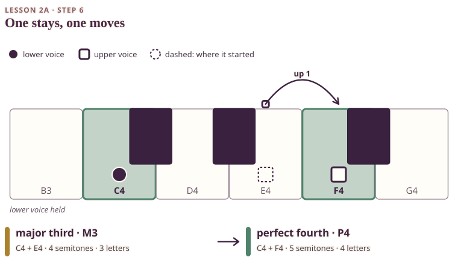

Start again with C4 and E4 sounding together. Keep the lower C4 held. Now move only the upper E to F.

The dashed square is where the upper voice started (E4) and the arrow shows its single step to F4. The lower voice, the circle on C4, does not move. The keys are coloured for the pair where you finish, and the two badges name the start and the end.
On your keyboard. Hold C4 with one hand, or hold it down with a finger. Before you move, try to hear or picture the little rise from E to F. Hum it, or trace it along the keys without pressing. The keyboard can be a ruler for musical distance, even when you are only imagining the next note. Then, with the other hand, play E4 and move to F4. Say aloud which voice moved and which stayed. Then say how many semitones the interval is now. Play C4 + E4 again and compare it with C4 + F4.